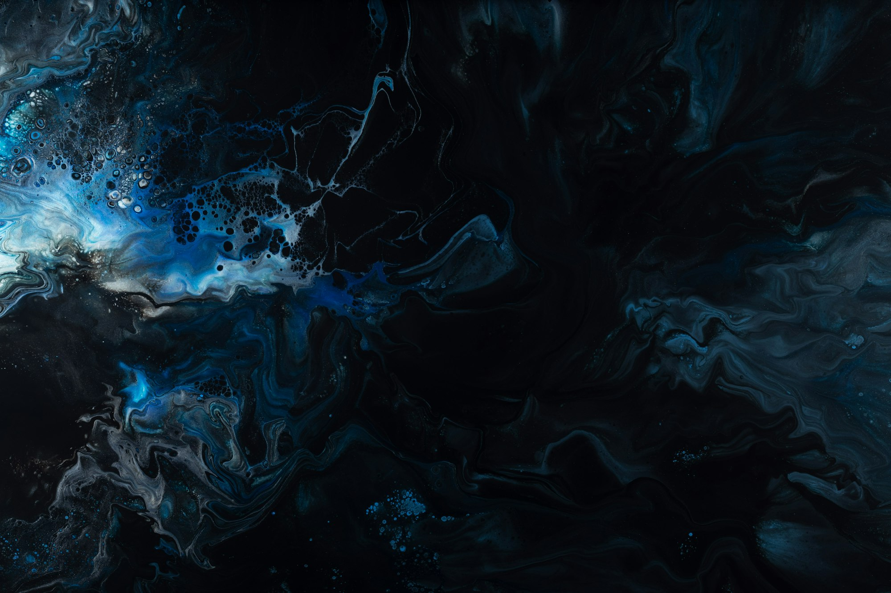

Pillar 01
Sensory Branding
- Sensory audit & strategic advisory
- Sensory strategy, positioning & design
- Scent curation & production
- Sonic curation & production
- Spatial curation & material styling
- Sensory system integration
- Brand & hospitality playbooks
- Customer journey planning
- Cultural adaptation & localisation